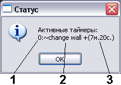
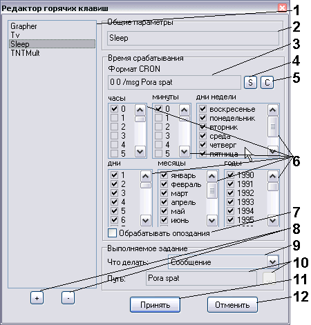

Планировщик и таймер с возможностью индикации оставшегося времени
Версия: 1.4
Автор: Python <smisoft@rambler.ru> (c) SmiSoft (SA)
Что это такое:
Есть целая серия программ-таймеров, которые по истечению определенного
времени теребят пользователя, или выполняют какое-то задание. Например, чтобы
не забыть про время, играя в интересную игру.
Есть целая серия программ, выполняющих заданное действие в определенное
время. Самый популярный пример таких программ - программа Назначенные задания
(поставляется вместе с любой версией Windows и по умолчанию висит в трее в виде
окошечка с часиками в левом нижнем углу, или работает как сервис в Windows NT/2000/XP).
Вначале я реализовал плагин, выполняющий только первую функцию, но потом
(по немногочисленным просьбам) написал продолжение плагина, реализующего также
и вторую функцию. За базу я принял великолепную программу nnCron (ее легко
найти в интернете и она бесплатна для русских пользователей).
Возможности:
Выводит заданное текстовое сообщение через определенное время, либо
запускает указанную программу с параметрами, либо показывает заданное On
Screen Display сообщение.
Может показывать оставшееся время на обычных часах (круглых). Показывается
только первый таймер из всех, что требуют показа времени (после смерти первого
таймера, очередь перейдет к следующему).
Может выполнять задания по расписанию. Время задается в формате Cron.
Четыре типа заданий: /msg - вывод модального сообщения, /osd
- показ On Screen Display сообщения, /run - запуск программы, /tar
- выполнение алиаса TaR.
Как пользоваться:
Основные понятия Cron (ВАЖНО!)
При описании алиасов будет использоваться слово Cron. Что же это такое?
Формат Cron изначально был придуман для одноименной программы Cron под Unix.
Программа оказалась столь удачной, что вскоре появились ее многочисленные
клоны. Мой плагин также относится к этим клонам (пусть и очень далеким от
оригинала).
Время Cron представляет собой строку из 6 блоков:
минуты часы дни месяцы дни_недели годы
Каждый блок задает множество возможных значений, или диапазонов, например:
"0,1,5-10", или спецсимвол *, означающий все возможные значения.
Конечные блоки, содержащие лишь * можно опускать. Например, "10 12"
означает 12 часов 10 минут в любой день.
Формат Cron требует указывать номера дней недели. Воскресенье имеет номер
0, дни с понедельника по субботу - соответственно от 1 до 6.
Дата удовлетворяет условию (и соответствующее задание выполняется) тогда и
только тогда, когда соответствующие поля даты удовлетворяют полям Cron.
Например, строка "0 20 * * 0,6" вынуждает плагин выполнять задание в
8:00 вечером по выходным.
Основные понятия задания (ВАЖНО!)
При описании алиасов будет использоваться термин Задание. Что же это такое?
Плагин поддерживает на данный момент четыре типа заданий:
- /msg Строка
Выводит сообщение в модальном окошке. В строке могут использоваться спецсимволы:
\n - перенос строки
\t - табуляция
\\ - символ \
- /run Имя_программы параметры
или
/run "Имя программы с пробелами" параметры
Запускает программу с заданными параметрами. Рабочий каталог - текущий.
- /osd Строка
Показывает сообщение посредине экрана на контрастном фоне на одну секунду.
Функция еще не слишком отлажена, но при работе в обычном режиме (то есть не в
полноэкранном приложении типа игр) работает вполне удовлетворительно).
- /tar Строка
Передает указанную строку для выполнения в TaR через стандартный интерфейс.
Если ключ не указан, или время указано ошибочно, то расписание не будет установлено,
зато будет отображено уведомление.
Алиасы:
- ~SetTimer ЧЧ:ММ:СС [номер] [/a] [/loop] [/late] [/start] задание
Установка или модификация прежнего таймера.
- ЧЧ:ММ:СС - время, через которое сработает таймер.
Можно задавать в виде ЧЧ:ММ:СС (например 3:0:7 - сработает
через 3 часа 7 секунд) или ММ:СС (например, 7: - сработает
ровно через 7 минут) или СССС (например, 600 - сработает через
600 секунд (10 минут))
Как видно из примеров, ведущие нули можно пропускать и даже можно пропускать
нулевые значения параметров (например, первый пример можно записать как
3::7, хотя это и непривычно).
Нельзя завести таймер на 0 секунд, или пропустить время вообще - таймер
не установится, а вы будете оповещены об ошибке.
- номер - можно изменить поведение уже установленного таймера,
если известен его номер, либо установить таймер с известным номером. Если
параметр пропущен, используется таймер с номером 0. Особенность данного таймера
- нельзя получить информацию о нем с помощью ~gettimer, а "~killtimer 0" убивает
последний установленный таймер с номером 0. Также нельзя редактировать таймер с
новером 0 вызовом ~settimer
- /a означает, что вы увидите в правом верхнем углу круглые часики,
показывающие привычными стрелочками, сколько времени осталось до срабатывания.
Это - не окошечко, а картинка, поэтому ее нельзя передвигать, зато она не
мешает нажимать на кнопки, расположенные под ней (и не занимает место в памяти)
- /loop - создает циклический таймер, то есть он будет вызывать указанное
действие через указанный период. Функция может пригодиться, например если вы
хотите каждый час делать перерыв (для сохранения вашего зрения).
- /Late - позволяет выполнить действие таймера, как только это станет
возможным. То есть вы можете отключить компьютер, таймер (который должен был
выполниться пока компьютер был отключен) сработает сразу по загрузке плагина.
- /Start - полезен, только если указан ключ /Loop и /Late.
Если таймер не сработал в назначенное время, то он сработает сразу по запуску
плагина (правило /Late), а следующий запуск (правило /Loop)
произойдет либо в точности через указанное время (если /Start указан),
либо в то время, как если бы все таймеры сработали.
Например, в 13:00 вы завели таймер на 1 час (циклический). Таймер сработал
в 14:00, затем компьютер был выключен и включился только в 17:30. Если ключ
/Late был указан, то таймер сработает немедленно. Если ключ /Start
был указан, то следующее срабатывание произойдет в 18:30, если же нет - то
в 18:00 (как если бы таймер в 15:00, 16:00 и 17:00 сработал). Указывать или
нет данный ключ - зависит от типа выполняемой задачи.
Примеры употребления:
- ~SetTimer 600 /a /msg Отключить чайник
если хотите кипятить чайник 10 минут. Или такой:
- ~SetTimer 3:: /run C:\Programs\TerminateHalfLife.exe
если нужно, чтобы таймер оторвал вас от интересной игры и чтобы его не было видно.
Особенность: ключи /a могут быть указаны для нескольких таймеров одновременно,
но видно будет только первый из них (имеется в виду, который раньше установили).
Если его уничтожить вызовом ~killtimer, или он сам умрет по истечению времени,
или если скрыть его вызовом ~settimer без /a, то будет виден следующий таймер.
- ~KillTimer [номер]
Уничтожает заведенный таймер с указанным номером, или все заведенные таймеры
(как скрытые, так и видимые), если номер не указан.
- ~GetTimer [номер]
Показывает информацию о таймере с указанным номером, или сколько и
каких таймеров у вас заведено.

- идентификатор таймера
- команда, выполняющаяся при срабатывании
- сколько времени осталось до ближайшего срабатывания
- ~SetShed Идентификатор Cron [/Late] Задание
Устанавливает расписание.
- Идентификатор - любая непустая строка, составленная из букв,
цифр и знаков препинания в любой комбинации (запрещены только пробелы и
табуляции)
- Cron - время срабатывания.
- /Late - означает, что задание будет выполнено как только будет
возможность. Новая функция, может не работать 29 февраля.
- Задание - любое записанное в соответствии с указанными выше
правилами задание.
- ~KillShed [Идентификатор]
Убивает расписание с заданным идентификатором, либо все расписания по
запросу, если идентификатор не задан.
- ~GetShed [Идентификатор]
Показывает информацию о расписании с заданным идентификатором, или
выводит диалоговое окно, позволяющее редактировать список существующих
расписаний с комфортом. Надеюсь, объяснения не нужны. Для упрощения
редактирования в списках существуют контекстные меню - оцените.

- Общий список заданий. Щелкните по заданию для просмотра его параметров
- Имя задания (идентификатор). Если укажете в имени пробел, не сможете
удалить потом задание по команде ~KillShed, только из редактора. Других
ограничений нет.
- Строка, записанная в формате Cron [флаги] задание. Можно редактировать
непосредственно ее, или визуальное представление (ниже).
- Преобразовать визуальное представление в Cron. Обновляет содержимое поля
3 в соответствии с изменениями визуальных полей.
- Преобразовать Cron в визуальное представление. Обновляет визуальные поля
в соответствии с изменениями поля Cron. При переключении элементов в списке
1 поле Cron и визуальные поля соответствуют друг другу.
- Визуальные поля редактирования даты. Отметьте галочками то условие, при
выполнении которого должно выполняться задание.
- То же, что флаг /Late
- Левая кнопка (+) добавляет новую запись с указанными параметрами в список.
Используется то представление (визуальное или Cron) которое последним было
исправлено. Правая кнопка (-) удаляет выделенную запись.
- Показывает тип выполняемого задания
- Показывает параметр (зависит от типа выполняемого задания) - сообщение,
программу с параметрами или передаваемую в TaR команду.
- Сохраняет сделанные изменения. Также можно принять изменения нажатием
Enter в полях редактирования
- Выход без сохранения изменений. Также можно выйти по нажатию на Esc.
- ~SetLoad [номер] [/1] [/timeout время] задание
Устанавливает задание, выполняемое при загрузке системы (вроде папки Автозагрузка,
но удобнее).
Параметры:
- номер - используется только для редактирования существующего задания.
Каждому заданию соответствует свой номер (от 1 до 25).
- /1 - означает однократное выполнение задания. После выполнения,
будет автоматически удалено.
- /timeout время - задает, через какое время после выполнения предыдущего
задания произойдет срабатывание этого задания. Папка Автозагрузка обычно запускает
все ярлыки подряд - флаг timeout дает возможность избежать такого хаоса.
- задание - любое задание.
- ~KillLoad [номер]
Убивает задание с заданным номером. Если номер не указан - убивает все задания
(без предупреждения!)
- ~GetLoad
Показывает все назначенные на загрузку задания с номерами.
- ~SetUnLoad [номер] [/1] [/timeout время] задание
То же, что ~SetLoad, но выполняется при зывершении работы системы
- ~KillUnload [номер]
То же, что ~KillLoad, но для заданий, назначенных на завершение работы.
- ~GetUnload
Показывает все назначенные на завершение работы задания.
- ~ForgetCD [параметр]
Функция-незабудка. Выбросит диск из CD привода, если вы попытаетесь отключить
компьютер и оставите там диск. Параметры:
- нет параметров - показать статус незабудки
- 0 - отключить незабудку
- 1 - включить незабудку
Особенности:
- При высокой загрузке системы окна таймеров могут не обновляться. Это не
проблема, а особенность, так как в целях экономии ресурсов системы я установил
таймеру наименьший приоритет. По истечении времени, таймер сработает сразу,
как это только станет возможным.
- Расписания и активные таймеры сохраняются в файле имя_плагина.ini.
История:
[+] Новая фича
[*] Пофиксен баг
[-] Убрана фича
Версия 1.0 - 03.02.05
[+] Первая рабочая версия плагина
Версия 1.1 - 05.02.05
[+] Появилась возможность переустанавливать время таймера через командную строку
[+] Появилось несколько новых алиасов (см. описание)
[+] Появились новые ключи (/msg и /run)
[-] Убрано контекстное меню таймера
[*] Решена проблема с передвижением окна часиков
[*] Переработан алгоритм анализа командной строки
[*] Исходный код переписан под Delphi 3.0 и теперь не использует runtime библиотек.
Версия 1.1 final - 06.02.05
[*] Исправлен небольшой недочет интерфейса - серая полоска справа от аналогового таймера.
[*] Убран заголовок окна у цифрового таймера
[*] Исправлен сбой, возникавший при выходе их TypeAndRun при активномм таймере под Windows 2000
Версия 1.2 - 04.05.05
[+] Появилась возможность создавать расписания (то есть запускать задачи, например, в 12:30). Это - самое основное отличие.
[+] Появился новый ключ /osd (как для команды ~settimer, так и для ~setshed) - это позволяет на одну секунду показывать посредине экрана указанный текст. "Фирменный" алгоритм для создания настоящих On Screen Display сообщений мне неизвестен, поэтому пришлось писать свой. В играх возможно кратковременное мерцание (без негативных последствий).
[+] Появился новый ключ /tar (как для команды ~settimer, так и для ~setshed) - это позволяет выполнить любую команду TaR, как если бы она была введена в консоли.
[-] Теперь остановить таймер через контекстное меню нельзя. Нельзя также перетаскивать часики - они навеки прикреплены к правому верхнему углу. Зато библиотека занимает меньше места в памяти :-)
[-] Ключ /d убран
[*] Убрано ограничение на длину строки - раньше 255 символов, теперь 65535. Впрочем, это вряд ли кто оценит :-)
[*] Теперь номер таймера не соответствует его физическому размещению в очереди, а лишь используется при вызове команд ~gettimer и ~killtimer
[*] Команда ~settimer, явно заданная с идентификатором, модифицирует указанный таймер.
[*] Плагин переписан на Delphi 6.0. С Run-time библиотеками - мне места на диске жалко :-(. Если надо - можно перекомпилировать - исходники доступны.
Версия 1.3 - 29.06.05
[+] Наконец то таймеры сохраняются.
[+] Изменен интерфейс редактора. Теперь - более удобный и Windows XP совместимый интерфейс.
[+] Теперь все сообщения полностью локализуются из INI файла.
[+] Теперь выдаются сообщения об ошибках.
[-] Удалена команда ~StoreShed. Теперь сохранение происходит автоматически при выховах редакторов. Тем не менее, при обычном срабатывании таймеров и расписаний записи не происходит, поэтому после ошибочных завершений работы плагина возможны ложные срабатывания расписаний и таймеров с проставленным флагом /Late (обработка опоздавших событий)
[*] Добавлена возможность обработки опоздавших событий. Эта функция включается ключом /late или соответствующим флагом в окне редактирования.
[*] Новые ключи /late, /start, /loop
[*] Версия без использования сторонних библиотек
Версия 1.4 - 03.07.05
[+] Выполнение заданий при загрузке и завершении работы компьютера.
[+] Незабудка: не позволит вам забыть диск в приводе
[+] Теперь OSD работает и в полноэкранных играх